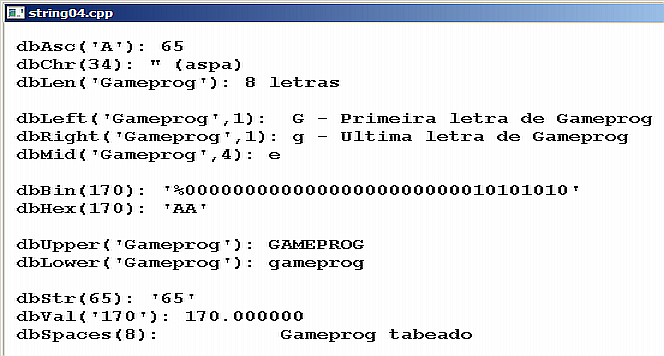

Curso completo de DarkGdk
Gameprog - Escola de programação de jogos digitais
Contato: gameprog.br@gmail.com
Fase 2.4
02.4 Manipulação de strings
2.4 Manipulação de strings
| Função | Descrição |
nval = dbAsc (txt)
int dbAsc ( char* szString ) |
Retorna o código ascii da primeira letra de txt |
txt = dbChr (nAsc)
char* dbChr ( int iValue )
|
Retorna o caracter correspondende ao código ascii especificado (nAsc) |
txt = dbBin (nval)
char* dbBin ( int iValue ) |
Retorna a representação binária de nval na forma de uma string |
txt = dbHex (nval)
char* dbHex ( int iValue ) |
Retorna a representação hexadecimal de nval na forma de uma string |
ntam = dbLen (txt)
int dbLen ( char* szString ) |
Retorna o tamanho da string txt |
sres = dbMid (txt, nqtd)
char* dbMid ( char* szString, int iValue) |
Retorna uma string (sres) formada de nqtd caracteres da string txt |
sres = dbRight (txt, nqtd)
char* dbRight ( char* szString, int iValue) |
Retorna a quantidade nqtd de caracteres da string txt avançando pela direita |
sres = dbLeft (txt, nqtd)
char* dbLeft ( char* szString, int iValue) |
Retorna a quantidade nqtd de caracteres da string txt a partir da esquerda |
sres = dbStr (txt, nval)
char* dbStr ( char* szString, int iValue) |
Converte o valor nval para uma string txt |
sres = dbUpper (txt)
char* dbUpper ( char* szString ) |
Retorna a versão em caixa alta da string txt |
sres = dbLower (txt)
char* dbLower ( char* szString ) |
Retorna a versão em caixa baixa da string txt |
nval = dbVal (sval)
int dbVal ( char* szString ) |
Converte uma string para um tipo numérico |
txt = dbSpace (nqtd)
char* dbSpace ( int iSpace ) |
Retorna uma string de nqtd espaços |

// string04.cpp
// Esse programa ilustra a manipulação de strings
#include "DarkGDK.h"
void initsys();
void tst_texto_04();
int nPreto = 0;
int nAzul = 0x0000FF;
int nBranco = 0xFFFFFF;
// Começo da aplicação DarkGdk
void DarkGDK ( void ) {
initsys();
tst_texto_04();
while ( LoopGDK ( ) ) {
dbSync ( );
} // fim do while
return;
} // fim da função: DarkGDK
void initsys() {
// Esta função inicializa o sistema
dbCLS(nBranco);
dbInk(nPreto, nBranco);
dbSetWindowTitle ("string04.cpp");
// Configurando o video para a máxima performance a 60 fps
dbSyncOn( );
dbSyncRate ( 60 );
} // fim da função: initsys()
void tst_texto_04() {
// Esta função demonstra as funções de manipulação de strings
// Variáveis de trabalho
int nval = 170;
int nascii = 0;
int ntam = 0;
char txt[255];
char site[] = "Gameprog";
char* letra;
char* sval = "170";
dbPrint();
dbSetTextFont("Courier New"); dbSetTextSize(18); dbSetTextToBold();
nascii = dbAsc("A");
ntam = dbLen(site);
sprintf(txt, " dbAsc('A'): %d", nascii); dbPrint (txt);
sprintf(txt, " dbChr(34): %s (aspa)", dbChr (34)); dbPrint (txt);
sprintf(txt, " dbLen('Gameprog'): %d letras", ntam); dbPrint (txt);
dbPrint();
letra = dbLeft(site,1);
sprintf(txt, " dbLeft('Gameprog',1): %s - Primeira letra de Gameprog", letra);
dbPrint (txt);
letra = dbRight(site,1);
sprintf(txt, " dbRight('Gameprog',1): %s - Ultima letra de Gameprog", letra);
dbPrint (txt);
sprintf(txt, " dbMid('Gameprog',4): %s ", dbMid(site,4)); dbPrint (txt);
dbPrint();
sprintf(txt, " dbBin(170): '%s' ", dbBin(170)); dbPrint (txt);
sprintf(txt, " dbHex(170): '%s' ", dbHex(170)); dbPrint (txt);
dbPrint();
sprintf(txt, " dbUpper('Gameprog'): %s ", dbUpper(site)); dbPrint (txt);
sprintf(txt, " dbLower('Gameprog'): %s ", dbLower(site)); dbPrint (txt);
dbPrint();
sprintf(txt, " dbStr(65): '%s' ", dbStr(65)); dbPrint (txt);
sprintf(txt, " dbVal('170'): %f ", dbVal(sval)); dbPrint (txt);
sprintf(txt, " dbSpaces(8): %s Gameprog tabeado", dbSpaces(8)); dbPrint (txt);
} // fim de tst_texto_04()